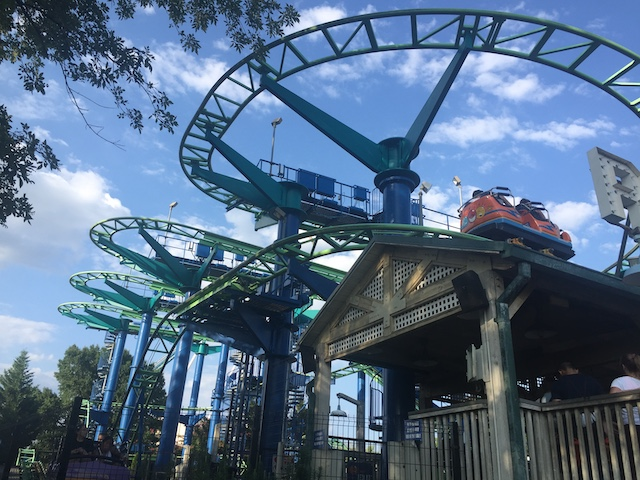
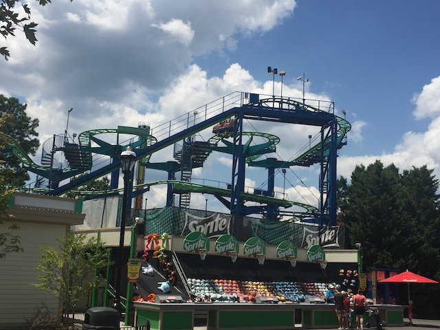
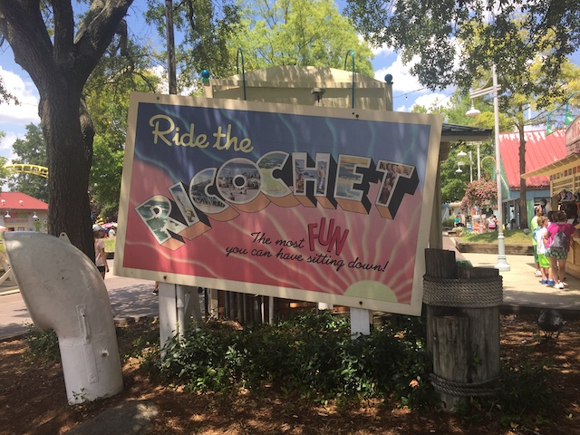
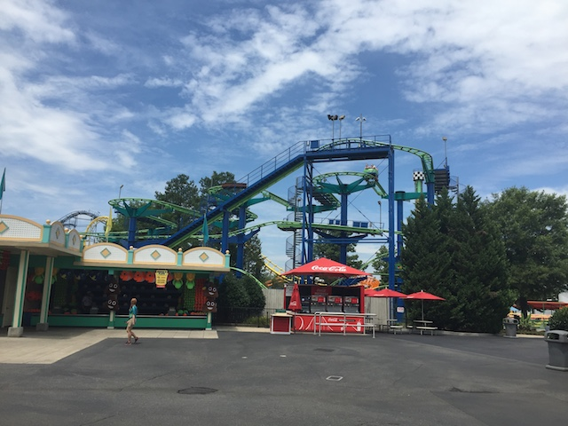
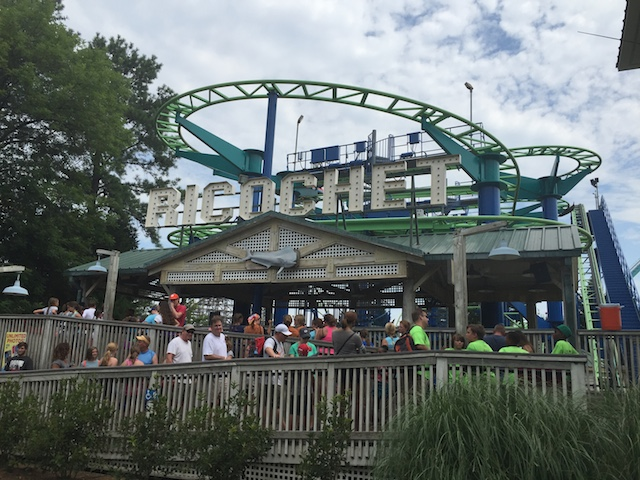
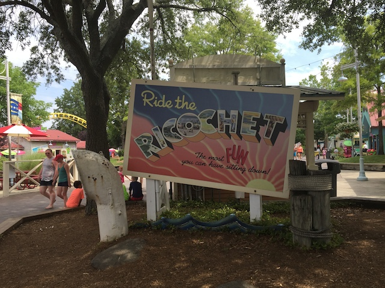

| |
Ricochet Review

We're here at Carowinds where we'll reveiwing Ricochet. The park's Wild Mouse. After getting in the seats and pulling down the lap bar, you go up the lifthill. Up, up, and up you go. Looking around, you can see the switchbacks on the ride as well as the rest of Carowinds. Then once we get to the top, you get whipped around a turn and set into the switchbacks. The switchbacks are fun because those turns are just great. But honestly, it's pretty dull. Yeah, Ricochet is definetly one of the slower wild mouse coasters. Then after going through the set of switchbacks, you are set off into a nice big turn that while fun, isn't anything special. Then unfortunetly, there are some trim brakes before the big drop, but that's to be expected. Then you turnaround only to go through the rides biggest drop. While it's not a very big drop. It's still fun. Then you meet another set of trim brakes, Then you come through another turnaround where we head towards the end of the ride. after another small drop, we head into the extra hump. Now actually, this hump is found on many Wild Mouse rides around the world, but because Goofy's Sky School doesn't have it, it is always refered to as the extra hump that Goofy's Sky School doesn't have. The extra hump is fun and definetly something that should be on all Wild Mice. At this point, pretty much over as we turn into a final dip into the brake run. While Ricochet is fun, after riding so many more agressive Wild Mouse coasters, it just comes off as dull and uninteresting. If you've been on a clone of it, I'd recommend skipping it. But if you're only limited to Arrow Mice, Goofy's Sky School, or have never ridden a Wild Mouse at all, I'd still recommend riding it. Just remember that there are much better clones out there.
6/10
Location: Carowinds
Opened: 2002
Built by: Mack
Last Ridden: July 25, 2019
I have ridden this exact same ride at the following parks.
Bakken
Hersheypark
Movie Park Germany
Nagashima Spaland
Ricochet Photos





Home
|